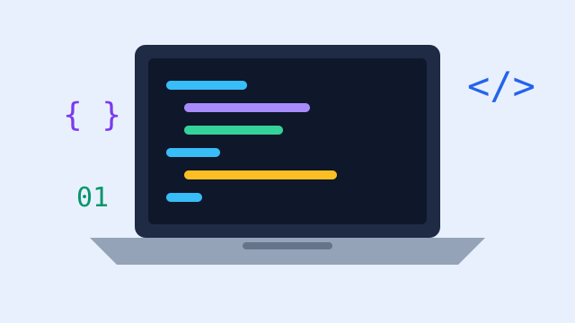

Programação
Lógica, algoritmos e linguagens de programação para criar aplicações e sistemas.
Aprenda a criar, manter e proteger os sistemas que movem o mundo digital
Quero me inscreverO curso técnico em Informática forma profissionais capazes de atuar no desenvolvimento de software, na manutenção de computadores e redes e no suporte a usuários. A proposta combina teoria e prática, com aulas em laboratório e projetos reais.
Ao longo da formação, o aluno aprende lógica de programação, banco de dados, desenvolvimento web e noções de segurança da informação, construindo um portfólio que ajuda na entrada no mercado.

Lógica, algoritmos e linguagens de programação para criar aplicações e sistemas.
Modelagem, criação e consulta de bancos de dados utilizando SQL.
Montagem e manutenção de computadores, configuração de redes e atendimento ao usuário.
Criação de páginas e sistemas para a internet com HTML, CSS e JavaScript.
Exemplo de organização das disciplinas ao longo do curso:
| Módulo | Disciplina | Carga horária |
|---|---|---|
| 1 | Lógica de Programação | 80 h |
| 1 | Montagem e Manutenção de Computadores | 60 h |
| 2 | Banco de Dados | 80 h |
| 2 | Desenvolvimento Web | 80 h |
| 3 | Redes de Computadores | 60 h |
| 3 | Programação Orientada a Objetos | 80 h |
O técnico em Informática pode atuar em empresas de tecnologia, em departamentos de TI de organizações de qualquer porte, em lojas de informática ou como profissional autônomo. As funções mais comuns são desenvolvedor júnior, técnico de suporte, auxiliar de redes e analista de testes.
Preencha o formulário abaixo e entraremos em contato com mais informações sobre o curso.